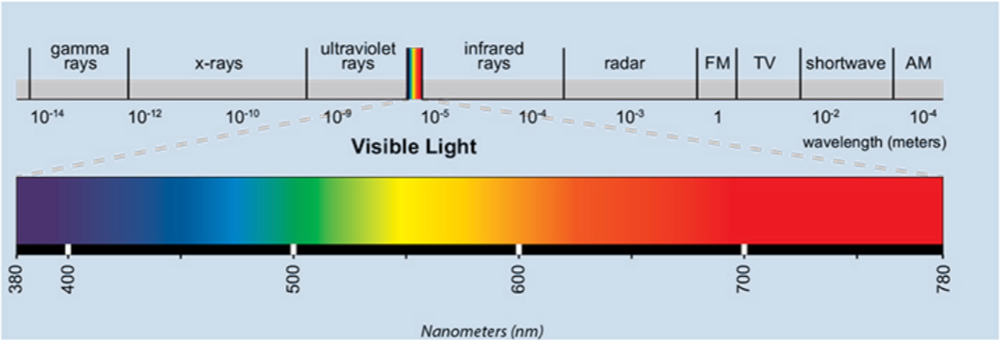
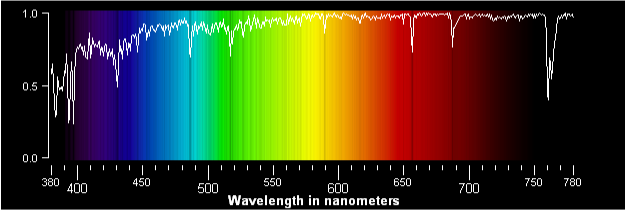
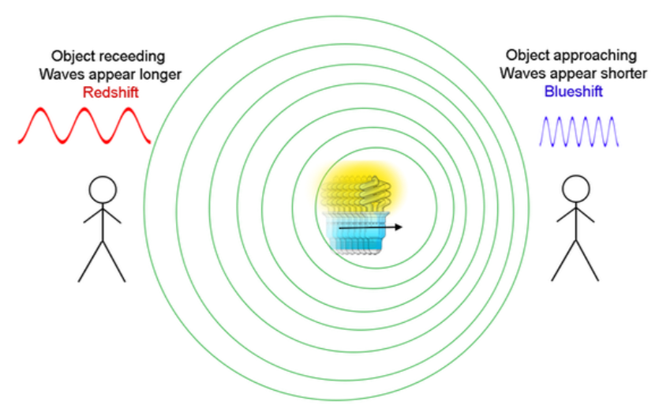
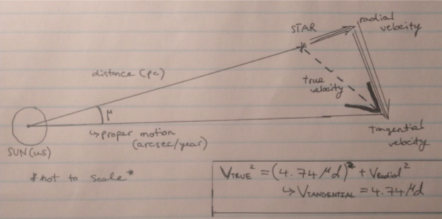
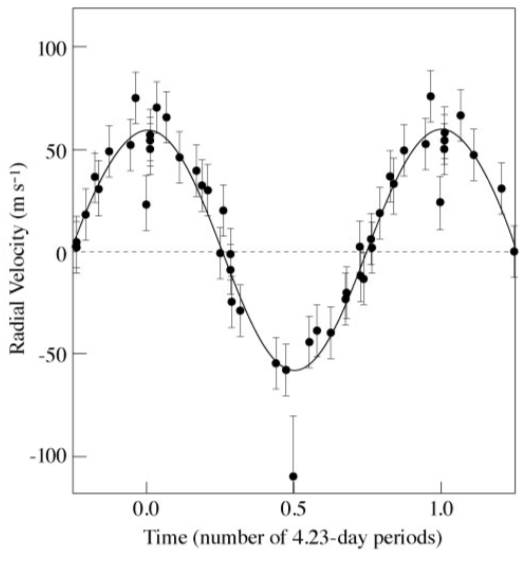
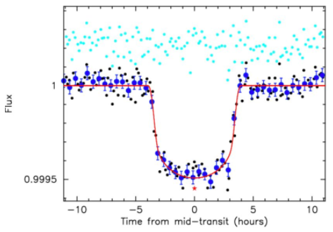
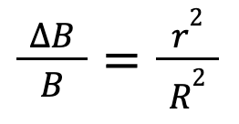

Exoplanets are very interesting once we know that they exist, but how
do we know that they exist? For this, there are many different methods
that are used, so that these exoplanets can be detected. Two of the most
important of these methods are known as the radial velocity method,
or RV for short, and the transit method. This article will explore
these two methods in depth, and then look at some additional methods that
some astronomers use to detect exoplanets, but are not that common. More will
be said about the interpretations of the data from these methods, and also
reliability of these methods in later sections:
Parameter Calculations and
Data Science, respectively.
Radial Velocity Method
Historically, the radial velocity method was used in order to detect
binary star systems, known as spectroscopic binaries. Binary stars
are considered to be a system of two stars that orbit one another, under the
influence of gravity, like a star and a planet. Using this method to detect
these binaries was a huge improvement compared to the previous method of
just directly observing binaries using telescopes, known as visual
binaries. This means that this method could identify binary stars that
were not visible through any telescope, just from the light of the "one"
star as it appeared, but how?
The secret lies in the spectrum of the star. A spectrum is basically
a scale of all wavelengths of light, or electromagnetic radiation, laid
out visually. Electromagnetic radiation can be thought of as travelling
in waves, like sound, and each colour appears different because it has a
different wavelength. In other words the wavelength of red light is
much longer than that of blue light, meaning that a scale of wavelengths,
or a spectrum, looks somewhat like a rainbow. In the visible spectrum,
violet light has the shortest wavelength, at about 380 nanometers, and
red has the longest, at around 700 nanometers. The spectrum also continues
in both directions, but these wavelengths can no longer be seen by us
humans: longer wavelengths towards the infrared (IR), or heat, and shorter
ones towards the ultraviolet (UV). Figure 1 shows the spectrum of
visible light, with the wavelengths also labelled, we can get this spectrum by
passing light through a prism for example, refracting it and breaking it
up to all of these different wavelengths. White light in fact is all
wavelength as one, and black is the absence of light.

Figure 1: The Electromagnetic Spectrum (Image from EYE Lighting
International).
Now comes the interesting part: since stars also emit all wavelengths of
electromagnetic radiation, we can observe the light of a star through a
telescope, and also pass it through a prism or diffraction grating to get
the spectrum of the star. If we do this for the Sun, we get something like
in figure 2, where there are some very specific wavelengths that are
missing, and there seem to be black lines in their place, meaning that
light is absent at those wavelengths. Also on figure 2 is a graph
showing the intensity of light through all the wavelengths, and in this graphic
representation, the dips in intensity represent the lines, known as the
spectral lines or absorbtion lines of the Sun where light is absent.

Figure 2: Spectral Lines of the Sun (Image from the RASC Calgary
Center).
When measuring the spectra of specific elements, such as Hydrogen and
Helium that are strongly present in the Sun, by passing light through them
in a laboratory, similar lines appear in very similar locations as in the
Sun, but it can also be noticed that all elements have their own unique
configuration of spectral lines, almost acting as a fingerprint of that
element. Knowing this, we can isolate specific spectral lines in the
spectrum of the Sun, and compare them to the “fingerprints” of different
elements to figure out the elements that are found in the Sun. In the above
case, we see 6 main lines in the visible part of the spectrum, at 431, 488,
519, 590, 658, and 688 nanometers. Of these, compared to lab measurements,
the first two and the fifth are lines of Hydrogen, the third and fourth being
Magnesium and Sodium respectively, while the last being that of Oxygen. The
strong presence of Hydrogen, but also a strengthened appearance of neutral
metals indicates that the Sun is an average G-type star, but more on
this later.
These lines are called absorption lines, because the wavelengths at which
these lines are present lack light that therefore must have been absorbed.
How does this happen? It turns out that each element has energy levels at
which the electrons can be present in the atom. These energy levels have
been modelled as shells, in which for an electron to jump from one
shell to the other requires energy. This energy is very specific, since
the energy level of each atom differs. For an electron to “bounce” like
so to a higher energy level in Hydrogen, we need a specific amount of
energy. Since electromagnetic radiation can be thought of as energy, and
violet light is higher energy than red light, that specific energy that
the Hydrogen atom will absorb for its electron to be excited will
correspond to a very specific wavelength of light (electromagnetic
radiation). The absorption of this wavelength by the atoms of one element
causes the appearance of absorption lines in the spectrum of that element!
So now the question may arise: how is all of this relevant to finding
exoplanets? Well, it turns out that the key lies in the understanding of
two concepts: that of spectral lines and that of the Doppler effect.
So now we understand the concept of spectral lines. They can be used to
measure elements present in a star, and therefore the type of the star,
but for the purpose of detecting an exoplanet, we can apply the principles
of the Doppler Effect to these lines, to get to know more about the star.
To understand the Doppler Effect, we can think of a speeding car passing
by honking on a highway. When the car passes by, at first, we hear high
pitched frequencies of the honk as the car is closing in, and then these
frequencies get lower quickly as the car passes by. This effect is caused
by the fact that the sound waves of the honk are compressed in front of
the car and are stretched out behind the car, as a cause of the motion of
the car. This can be better understood with an illustration (figure 3).

Figure 3: The Doppler Effect (Image from NASA)
So this effect can be understood due to the nature of sound travelling in
waves. However, it is important that electromagnetic radiation itself, and
therefore light, can be thought of as travelling in waves too. Therefore,
the Doppler Effect applies to light! This means a far away star for example
moving towards the Earth would have its light waves compressed, whereas a
star moving away from the Earth (this type is more common), would have its
light waves stretched out. We know that higher frequency visual light also
has more energy, and is bluer, while lower frequency and therefore light
with a lower wavelength has less energy, and is redder. Applying the Doppler
Effect therefore, the light of a star moving towards Earth would appear
slightly bluer, while a star moving away from the Earth would appear slightly
redder. These changes in colour can be thought of as shifts in the spectrum
of that star, which can in fact be detected by slight shift in the
wavelengths (energy) or the absorption lines towards the blue or the red from
the original wavelength of the line of an element, measured in a laboratory.
This is why astronomers call the spectrum of a star moving away from earth
redshifted, and the spectrum of a star moving towards earth
blueshifted. Since the universe is expanding, naturally, most of
the objects are found to be redshifted.
Often the term “moving away” or “moving towards” was used in the above
explanation, but what do these terms really mean scientifically? Well,
since we are talking about motion, we can describe these as velocities
of the stars. However, redshift and blueshift in spectra only account for
a very specific type of velocity, called radial velocity. This,
naturally, only measures the velocity of the star as it moves directly
away from, or directly towards the observer, and therefore the Earth.
Combining distance to the star and the proper motion or measured motion
across the sphere of the sky of the star (which together account for the
tangential velocity of the star), and the radial velocity of the star,
trigonometrically, the true velocity can be calculated by astronomers
(figure 4). However, for the sake of detecting an exoplanet, only
the radial velocity provides valuable information.

Figure 4: Astrometry of the velocities of a star (my drawing)
Since obviously radial velocity is a velocity and therefore is not denoted
as change in wavelength, the radial velocity can be calculated from the
change in wavelength (from a red or blueshift) by the following equation:
Where lambda denotes the wavelength of the specific absorption
line being looked at, and delta lambda is therefore the change in
wavelength between the measured wavelength during the observation, and the
wavelength of the absorption line measured in a laboratory, under no
doppler shift. Lambda sub zero also represents the laboratory
wavelength. V sub r is the radial velocity of the star. For these
measurements, astronomers usually use the Hydrogen Alpha absorption
line (656.3 nm in laboratory), since Hydrogen is present in all stars, and
mutually everywhere in the universe.
In this way, observing a star can give us its radial velocity, based on
the red of blueshift present in its spectrum. All stars are in motion,
and some away, whereas some towards our Sun. Therefore, all will have
different constant radial velocities. However, how does this apply to
detecting potential exoplanets? We know that when two objects in the
universe have mass, which can be two stars in a binary star, or a planet
and a star, they are under the influence of each other’s gravity. This
means that in an exoplanet orbiting a star, it is not only the exoplanet
that is orbiting due to the effect of the star, but the star is also under
the effect of the gravity of the exoplanet. In this way, that star is also
orbiting around the exoplanet, but this orbit is so insignificant, that it
is perceived as a wobble in the star. Now this is very interesting, since
as spectrographs, which measure the red and blueshift in spectra,
became very advanced, they were able to actually observe fluctuations in
the radial velocities of stars. These fluctuations of radial velocities
could be implied as a wobble in the star, where it is moving away from the
Sun and then back again cycling again and again, as the theorized planet
orbits it. This data can be graphed against time (figure 5), and a
very nice sinusoidal variation emerges. It is through this that astronomers
can imply the existence of an orbiting exoplanet, and
parameters like its mass, orbital period and
radius, and velocity in the orbit.

Figure 5: Sinusoidal variation in the radial velocity of 51 Pegasi
by time, implying the existence of exoplanet 51 Pegasi b, the first
one discovered. (image from NASA)
Transit Method
The transit method is very different from the radial velocity method
explored above, since it in fact does not look at red and blueshifts
in spectra to measure velocities, but instead looks at the brightness
of the star of interest. Very powerful telescopes, most of them being in
space such as the Kepler space telescope, are able to detect very slight
dips in the brightness of a star, periodically, such that these dips are
not random. The fact that the dips do not appear randomly when the
brightness of the star is graphed on time is important, so that the dips
do not just represent random dust, or stellar winds that interfere with
a constant brightness of the star. Periodic dips however imply the
existence of an orbiting exoplanet that transits or eclipses in front
of the star once every year (for whatever the year length of that planet
is). This transit can almost be thought of as a solar eclipse, however
in a solar eclipse, it is the moon that transits in front of the Sun.
For transits to be measured, the inclination of the orbital plane has
to be edge on to the Earth (our orbit), or very close to edge on, since
otherwise the planet would not appear to pass in front of the star from
our line of sight, but instead above or below the star, not influencing
the brightness.
When we graph the brightness of a star on time (figure 6), again,
we see that these variations are unlike those of radial velocity, which
are sinusoidal, but instead show rapid dips, as the planet begins its
transit, and then rapid exists, with the brightness at the floor of the
dip seeming almost constant, since the surface area of the planet that
blocks out light from the star will be constant, meaning that the
brightness also. Only a small u-shape dip can be seen at the bottom of
the transits, probably due to the fact that stars emit more radiation
towards their centers from our line of sight as opposed to their edges.
Evidently, this is only from our line of sight, since in reality, stars
are spherical and emit equal amounts of energy on all areas of their surface.

Figure 6: Transit graph for Kepler 22b, a potentially habitable
Earth-like exoplanet discovered in 2011. (Image from Parimucha et al.,
2012)
The above figure (figure 6) shows only one light dip, however,
with very sophisticated instruments and larger planets, a smaller secondary
dip is often visible, theorized to be caused by when the possible planet
disappears behind the star, and therefore the light that was reflected off
of it in addition towards the Earth is not received. It could be
interesting to know whether that secondary dip can also model the surface
area of the planet, since that dip is the signal of the missing light that
would usually come from the planet. This however, even if it could be
modelled, is not the best way to imply the radius of the exoplanet, since
it can be implied directly from the large dip in the brightness. It is
modelled as follows:

Where delta B is the change in brightness over the initial
brightness. This ratio is equal to the ratio of the radius of the
planet squared (lowercase r) over the radius of the star squared
(uppercase R).
So as seen, the transit method is valuable for use in a way that the
radial velocity method cannot be used, and that is through calculating
the radius of an exoplanet. However, the transit method cannot calculate
the mass. From the light curve graph, the period, and therefore the
orbital radius along with the velocity of the planet in orbit can also
be implied.
Other Methods
The above mentioned are the two main methods that are used in detecting
exoplanets, however there are many others that have been used and have
been successful on a smaller scale. These involve some of the following.
Imaging is a method that takes a direct image of an
exoplanet, but blocking out the oppressive light of the star.
This however requires meticulous instruments and is very hard to do.
Timing is another method that involves timing the transits
of an exoplanet over a star, potentially detecting variations in
those transit times, and predicting presence of other possible
planets in that system whose gravitational effect might have
caused these variations. This again is very difficult to do
precisely.
Gravitational microlensing is a very exciting method that
uses the gravitational field of the star of interest as a lens to
the light of a background star that is almost perfectly aligned
with the lens star in our line of sight. If there is a planet
orbiting the lens star, then the gravitational field of that planet
might act to bend the light coming from the background star. This
bending variation could imply the presence of an exoplanet. The
reason why this method is exceptionally interesting is that it
is able to detect very small planets too down to Mars size, in a
very ideal orbital range (not too close to the star).
An evaluation on these methods is explained in more detail in the data
science section, however, the detection methods focused on mainly in
this article are the popular ones: radial velocity and transit.